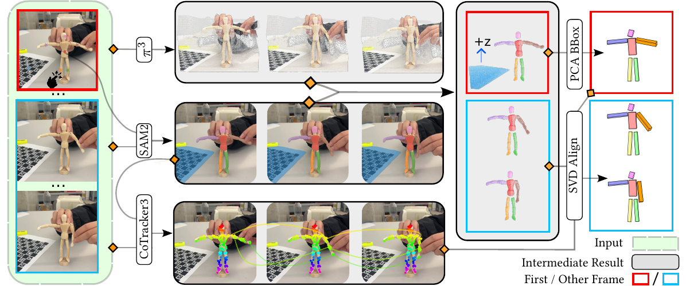
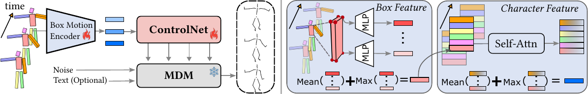

Creating compelling 3D character animations typically requires either expert use of professional software or expensive motion capture systems operated by skilled actors. We present DancingBox, a lightweight, vision-based system that makes motion capture accessible to novices by reimagining the process as digital puppetry. Instead of tracking precise human motions, DancingBox captures the approximate movements of everyday objects manipulated by users with a single webcam. These coarse proxy motions are then refined into realistic character animations by conditioning a generative motion model on bounding-box representations, enriched with human motion priors learned from large-scale datasets. To overcome the lack of paired proxy–animation data, we synthesize training pairs by converting existing motion capture sequences into proxy representations. A user study demonstrates that DancingBox enables intuitive and creative character animation using diverse proxies — from plush toys to bananas — lowering the barrier to entry for novice animators.
DancingBox consists of two core modules linked by a compact bounding-box representation: a vision-based Motion Capture (MoCap) module that tracks proxy objects in a webcam video, and a diffusion-based Motion Generation (MoGen) module that lifts those coarse box trajectories into realistic full-body skeletal animation.

Given a short webcam recording of a user manipulating any physical object, DancingBox estimates a sequence of 3D oriented bounding boxes — one per articulated part — without any specialised hardware. The user marks the desired parts with a few clicks on the first frame. SAM2 propagates these segments across all frames, robustly handling occlusions. π³ (Pi3) reconstructs a dense 3D point cloud from each monocular frame. An oriented bounding box is fitted to the first-frame point cloud via PCA, then tracked across time through SVD-based rigid alignment (Kabsch-Umeyama algorithm), yielding a compact box-motion sequence ready for generation.

The box-motion sequence is consumed by a ControlNet-style adapter built on top of a pre-trained human motion diffusion model (MDM). A permutation-invariant encoder aggregates temporal box features, handling the variable number of parts produced by different proxies (e.g., 4 boxes for a banana, 6 for a humanoid puppet). The encoder output is injected into the frozen denoiser via zero-initialised linear blocks for stable training. At inference, a lightweight spatial guidance mechanism further improves trajectory alignment without any additional training.
Questionnaires used in the user study, provided for reproducibility.